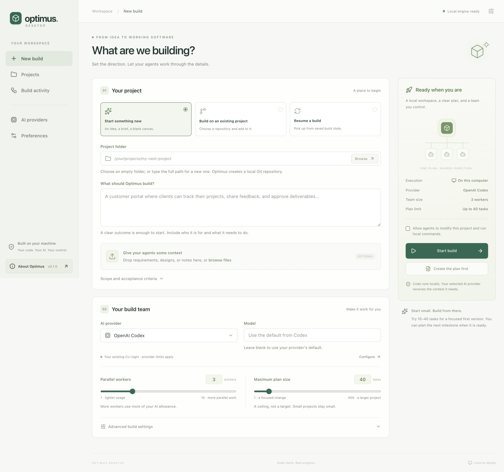

Give it a place to work
Choose a project folder. Describe the outcome and drop in your requirements, designs, or notes.
A clear plan. Parallel AI workers. Progress you can actually follow.
All connected through one desktop app, running on your computer.

Start a new project, work on an existing repository, or resume from saved state. You set the direction and decide how much work runs in parallel.
Choose a project folder. Describe the outcome and drop in your requirements, designs, or notes.
Connect Codex, Claude, OpenRouter, or Blackbox. Choose 1–10 workers and a plan ceiling of 1–400 tasks.
Create the plan first or start building. Follow worker activity and execution logs, stop when needed, and resume saved work.
Report a bug. Improve the docs. Share an idea or contribute a fix. If you can, a voluntary GitHub sponsorship helps support continued work on Optimus.
Sponsorship is optional. Feedback and contributions matter too.The desktop preview currently needs Python 3.11+, Git, and your chosen provider's command-line tool. Windows runs the engine in WSL 2.
Your code and build process live on your machine. Cloud AI providers receive the context they need and apply their own usage terms and charges. The repository remains private while the release is tested.